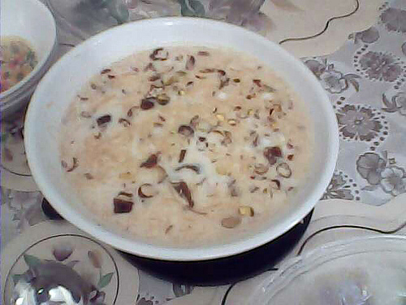
21. semiya-payasamFile:Sheer Khurma.jpg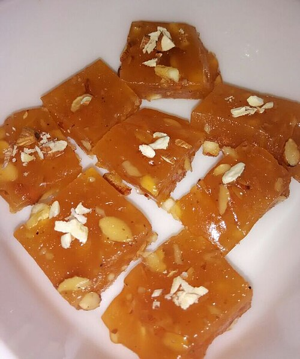
22. bombay-halwaFile:Karachi Halwa (Corn Flour Halwa).jpg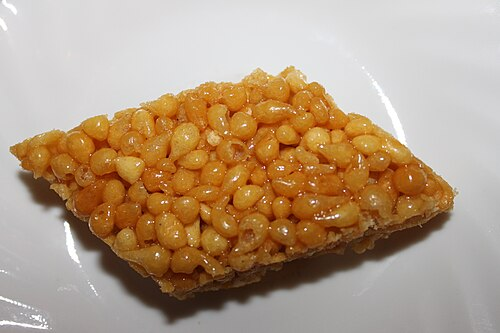
23. khara-boondiFile:Boondi Mithai.jpg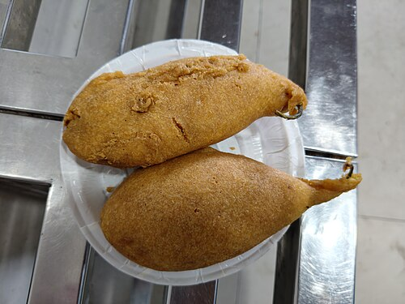
24. mirchi-bajjiFile:Mirchi Bada from Jodhpur 1.jpg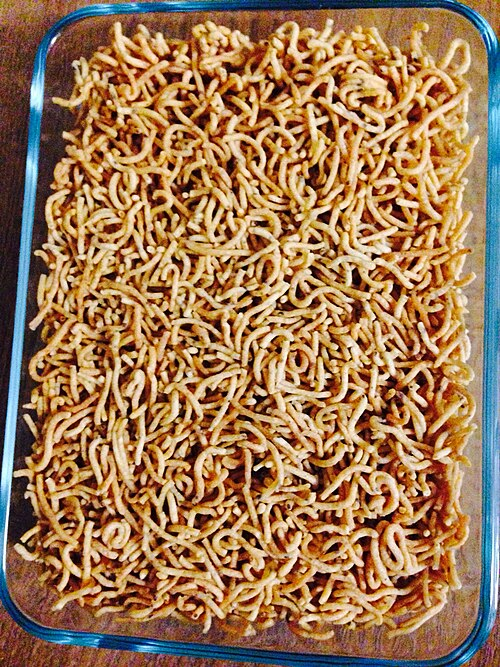
25. sevFile:Sev 2013-12-01 16-57.jpg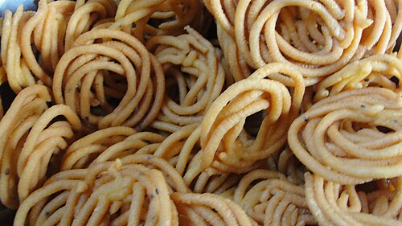
26. murukuluFile:A Traditional Tamil Snack Murukku.jpg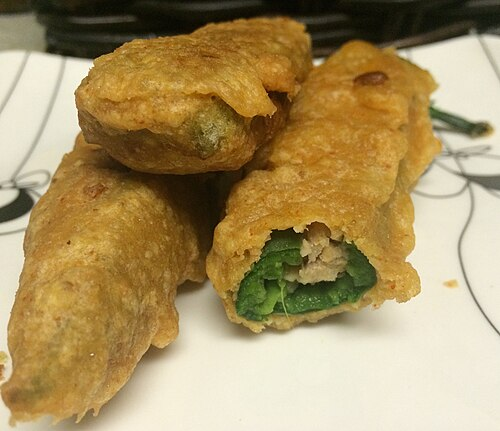
27. onion-pakodaFile:Stuffed mirchi bajji (16164286908).jpg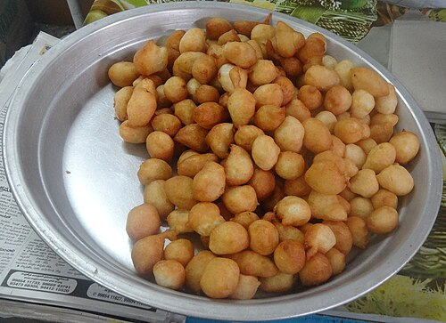
28. punuguluFile:Punugulu1.JPG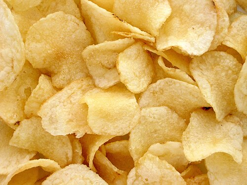
29. chipsFile:Potato-Chips.jpg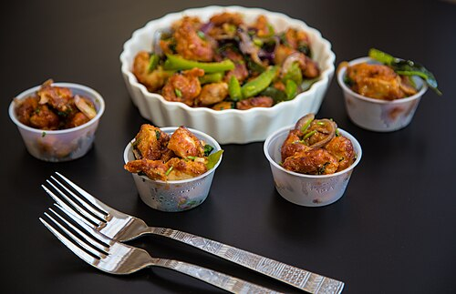
30. manchurianFile:Chicken Manchurian (Hyderabad Style) (11960049916).jpg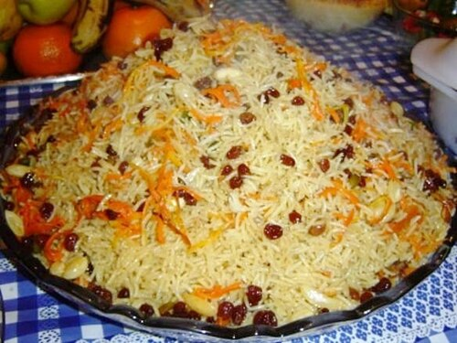
31. green-peas-palavFile:Afghan Palo.jpg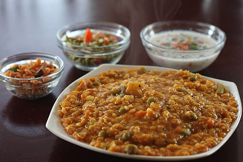
32. bisi-bele-bathFile:Bisi Bele Bath (Bisibelebath).JPG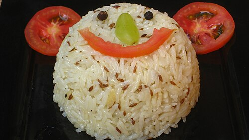
33. jeera-riceFile:Jeera-rice.JPG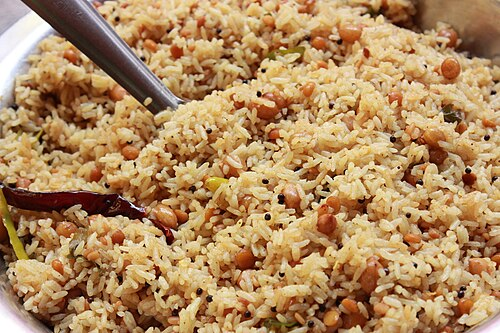
34. tamarind-riceFile:Pulihara.JPG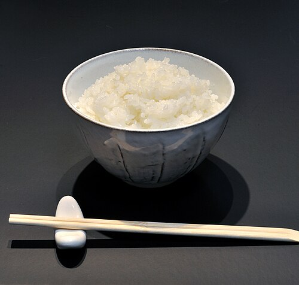
35. white-riceFile:Meshi 001.jpg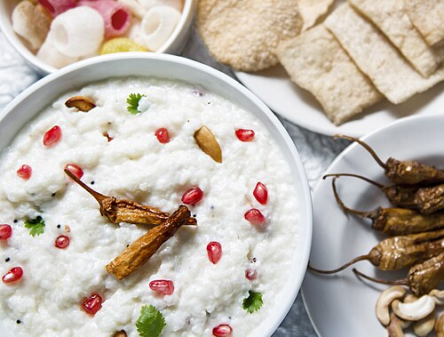
36. curd-riceFile:Curd Rice.jpg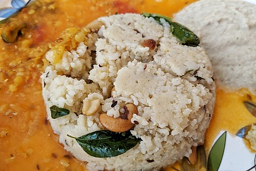
37. pongal-khichdiFile:Ven pongal with sambar and chutney.jpg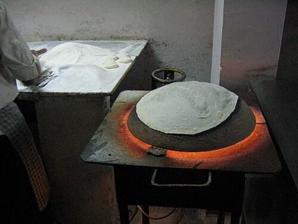
38. rumali-rotiFile:Tandoori roti I - initial contact (354969180).jpg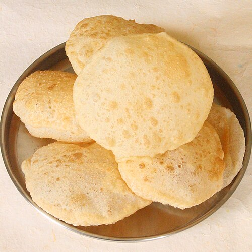
39. puriFile:Fluffy Poori (cropped).JPG 40. parathaFile:Triangle paratha (cropped).JPG
40. parathaFile:Triangle paratha (cropped).JPG